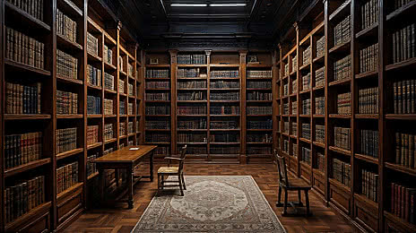

Libros
Novela, poesía, historia, ciencia, infantil y mucho más. Además, cada mes puedes recibir El Universo en una Caja, nuestra suscripción literaria.

Un lugar donde caben todos los mundos. En El Aleph encuentras libros nuevos y usados, un café para leer con calma entre los estantes y una comunidad que se reúne alrededor de las historias.
Novela, poesía, historia, ciencia, infantil y mucho más. Además, cada mes puedes recibir El Universo en una Caja, nuestra suscripción literaria.
Pide un tinto, un capuchino o una torta de la casa y quédate a leer el tiempo que quieras.
Club de lectura, talleres de escritura, charlas con autores y noches de jazz todos los sábados.